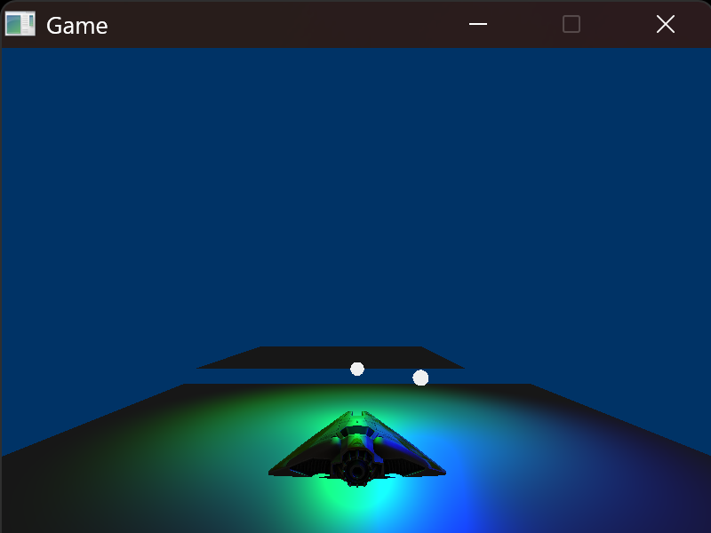
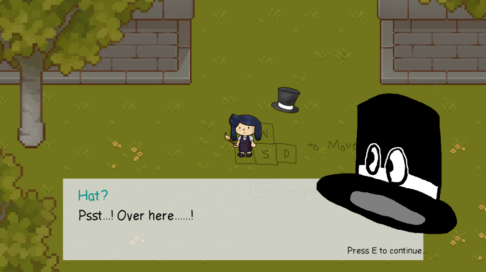
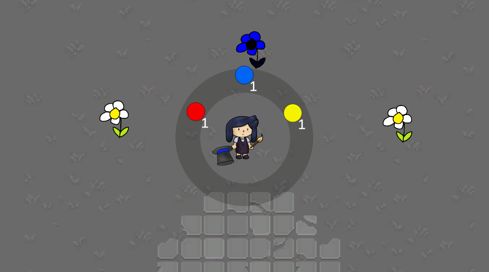
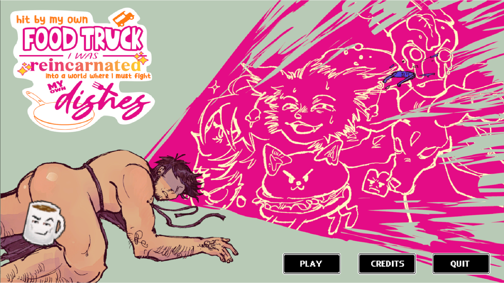
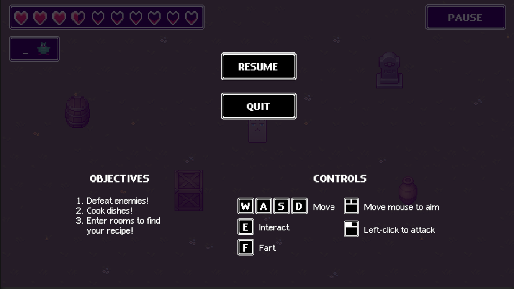

I recently joined The Unrealtor with the role of 3D artist!
Since this is a new development, expect this page (and the 3D works page)
to be updated periodically in the coming months up until the USC Games Expo.
I am currently working on a semester-long project to build a graphical games engine using SDL. It will be showcased here when it's finished. Currently, it is able to render 3D meshes, create lighting components, and load level files.
Current visual progress:

Collaborative semester-long project.
I worked with a fellow CS Games student to produce and develop this game, following a condensed game production pipeline. I took the role of main programmer on this project and assisted with gameplay, level design and tech support (ESPECIALLY with Git). My partner was credited as the main artist. We also collaborated with Berklee College of Music students to create and implement an original soundtrack and sound effects into the game.
Funny Color Game is a top-down 2D puzzle-adventure game where the player must paint and mix colors to progress a dungeon, and for the final submission we have a demo showcasing the tutorial and first floor levels of the game. Primary gameplay features include shooting paint and mixing colors using the 3 primary colors (red, blue, yellow). Here is a link to the playthrough, courtesy of my partner, Alivia Alva. Images are below.


Several small scale, individual projects done over the course of 15 weeks.
The main focus of these projects is to program game systems from scratch using C++ & SDL, including but not limited to:
I've compiled a few of my favorite projects to showcase here, linked below:
Collaborative month-long project.
I worked on backend features for a social-media web project where users would post recipes for the USC dining halls. I was involved in the planning and programming of the website, where I worked on the sign-up and sign-in features using SQL injections in Java.
You can use this link to access the website's repository (courtesy of my teammate, Myke Chen)
Collaborative month-long project.
I worked with my partner, Kristoffer Kaufmann, to conceptualize and create a short-play puzzle game to improve our skills in game system engineering and design with Unity.
Submission for Global Game Jam 2024.
One of the first projects I've ever used Unity for. Since I didn't have a lot of prior experience with
C# and Unity scripting, I worked closely with the UI designers and artists to program several UI elements
including the title screen, pause screen, intro cutscene, and health bar into the game.
I was credited
on the programming and UI/UX team.
The final proposed UI unfortunately did not make the game jam build for the game due to last minute repository issues, so I've included images below as a proof of concept.


You can use this link to see the itch.io page for this game.
Submission for USC Mega Newbies and Vets Game Jam 2023.
The first ever game jam I've participated in at USC. This one was a simple Ren'Py visual novel. I was credited with audio design, programming, and writing, though I also contributed a small part to character design concepts.
You can use this link to see the itch.io page for this game.